Architecture 09 - Galaxy Plugin Architecture
Contributors
Questions
How do I extend Galaxy?
What components can be plugged in?
How does the plugin system work?
Objectives
Understand Galaxy’s plugin architecture
Learn about major plugin types
Use
plugin_config.pypatternCreate custom plugins
layout: introduction_slides topic_name: Galaxy Architecture
Architecture 09 - Galaxy Plugin Architecture
The architecture of pluggable Galaxy components.
layout: true left-aligned class: left, middle — layout: true class: center, middle
class: center
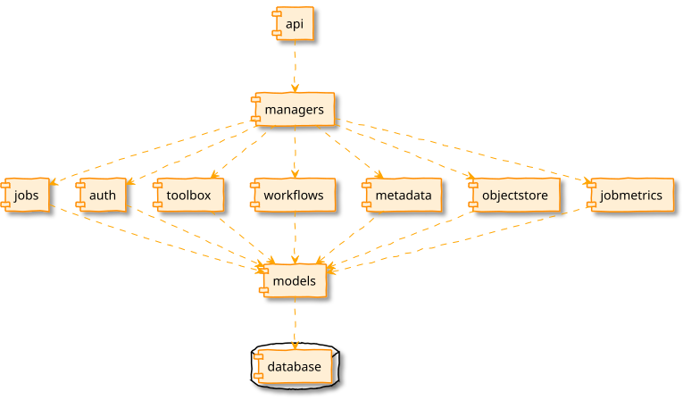
class: center
Plugins All the Way Down
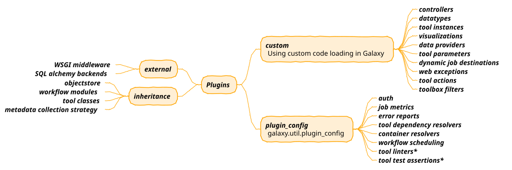
class: center
Datatypes
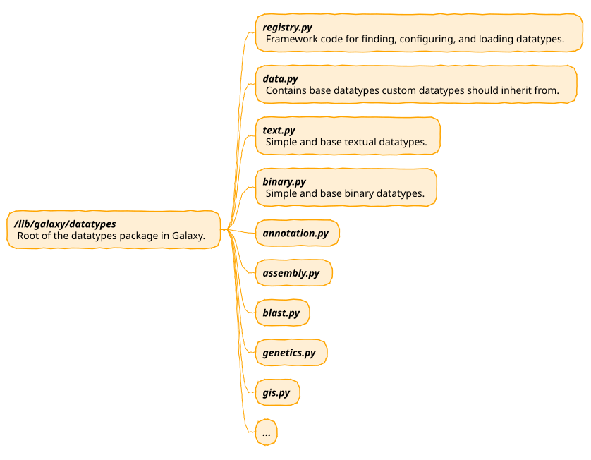
Developer docs on adding new datatypes can be found at https://docs.galaxyproject.org/en/latest/dev/data_types.html.
class: center
Tools
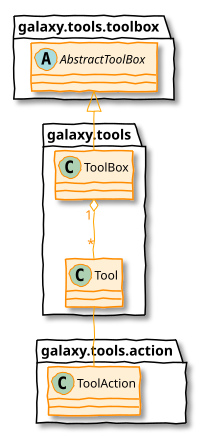
Three major classes can be summarized as - the ToolBox contains Tool objects
that execute a ToolAction.
class: center
Subclasses of Tool
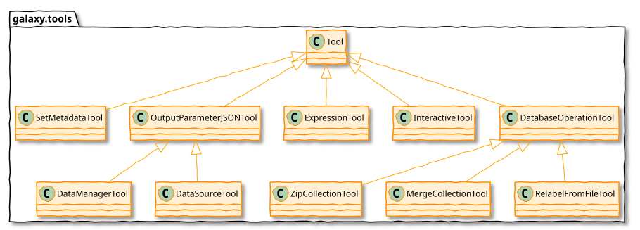
class: center
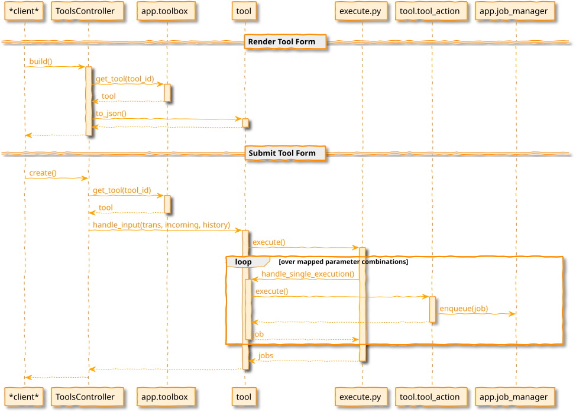
A Little About Jobs
- Job is placed into the database and picked up by the job handler.
- Job handler (
JobHandler) watches the job and transitions job’s state - common startup and finishing. - Job mapper (
JobRunnerMapper) decides the “destination” for a job. - Job runner (e.g.
DrammaJobRunner) actual runs the job and provides an interface for checking status.
class: center
Job Runners
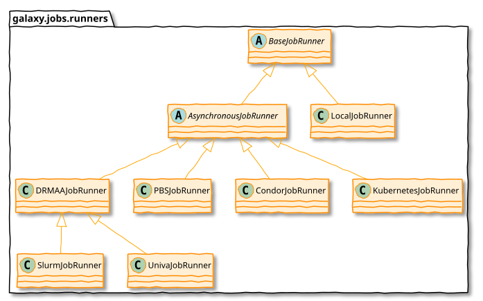
class: center
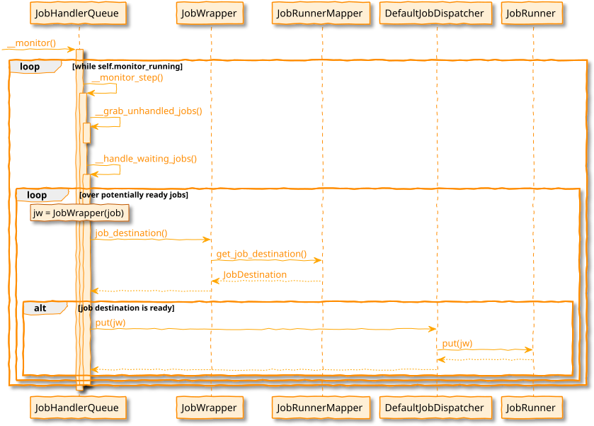
class: center
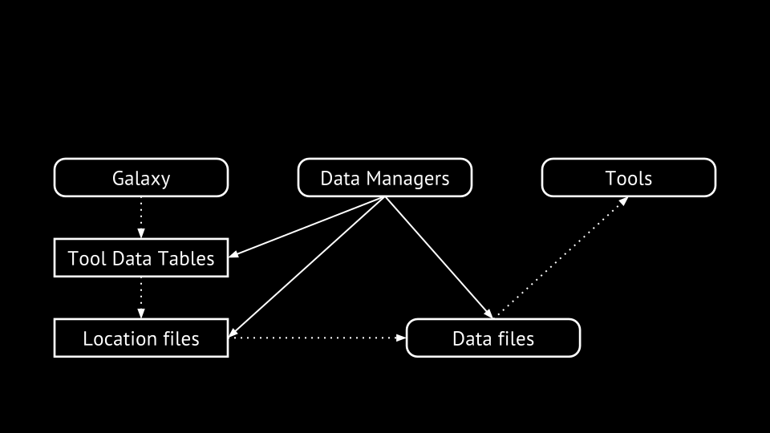
Visualization Plugins
Adding new visualizations to a Galaxy instance
- Configuration file (XML)
- Base template (Mako or JavaScript)
- Additional static data if needed (CSS, JS, …)
.footnote[Learn more about it with our visualization tutorial.]
class: reduce70
<?xml version="1.0" encoding="UTF-8"?>
<!DOCTYPE visualization SYSTEM "../../visualization.dtd">
<visualization name="ChiRAViz">
<description>ChiRAViz</description>
<data_sources>
<data_source>
<model_class>HistoryDatasetAssociation</model_class>
<test type="isinstance" test_attr="datatype" result_type="datatype">binary.ChiraSQLite</test>
<to_param param_attr="id">dataset_id</to_param>
</data_source>
</data_sources>
<params>
<param type="dataset" var_name_in_template="hda" required="true">dataset_id</param>
</params>
<template>chiraviz.mako</template>
</visualization>
Visualization Examples
All in config/plugins/visualizations:
chiraviz- Latest addition mid-2020, demonstrates current state of the art building and packing. #9562csg- Chemical structure viewergraphviz- Visualize graph data using cytoscape.jscharts- Classic charts as well as some integrated BioJS visualizationstrackster- Genome browser, deeply tied to Galaxy internals.
Data Providers
Provide efficient access to data for viz & API
Framework provides direct link to read the raw dataset or use data providers to adapt it
In config, assert that visualization requires a given type of data providers
Data providers process data before sending to browser - slice, filter, reformat, …
Object Store
.strike[```python
fh = open(dataset.file_path, ‘w’) fh.write(‘foo’) fh.close() fh = open(dataset.file_path, ‘r’) fh.read() ```]
>>> app.objectstore.update_from_file(dataset, file_name='foo.txt')
>>> app.objectstore.get_data(dataset)
>>> app.objectstore.get_data(dataset, start=42, count=4096)
class: center
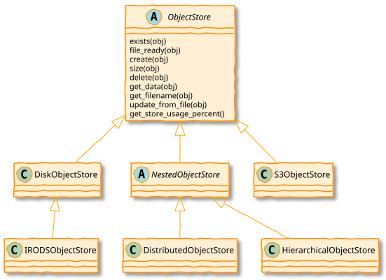
These implementation are found below lib/galaxy/objectstore/.
class: center
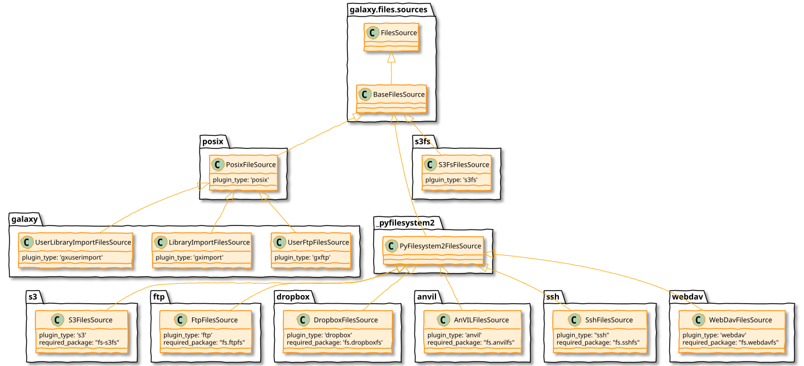
FileSources vs ObjectStores
ObjectStores provide datasets not files, the files are organized logically in a very flat way around a dataset.
FilesSources instead provide files and directories, not datasets. A FilesSource is meant to be browsed in hierarchical fashion - and also has no concept of extra files, etc.. The former is assumed to be persistent, the latter makes no such assumption.
More information about File source plugins can be found at http://bit.ly/gcc21files
class: center
Workflow Modules
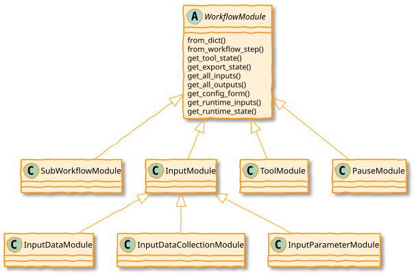
All these modules are found in lib/galaxy/workflow/modules.py.
lib/galaxy/util/plugin_config.py
Standardized way to load both a set of possible plugin class implementations from a directory of Python files and to parse either an XML or YAML/JSON description of configured plugins.
lib/galaxy/util/plugin_config.py Example Files
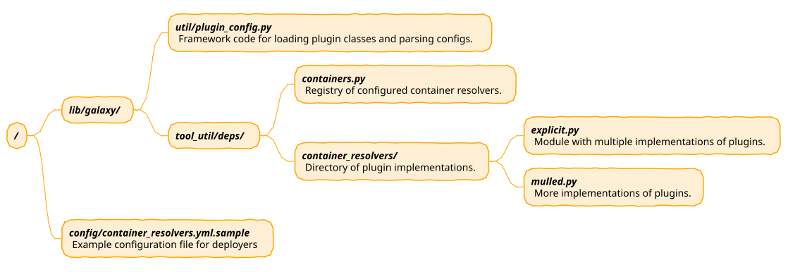
lib/galaxy/util/plugin_config.py Plugin Implementations
def plugins_dict(module, plugin_type_identifier):
plugin_dict = {}
for plugin_module in import_submodules(module, ordered=True):
for clazz in __plugin_classes_in_module(plugin_module):
plugin_type = getattr(clazz, plugin_type_identifier, None)
if plugin_type:
plugin_dict[plugin_type] = clazz
return plugin_dict
class: reduce70
Pieces of lib/galaxy/tool_util/deps/containers.py
class ContainerRegistry(object):
def __init__(self, app_info, mulled_resolution_cache=None):
self.resolver_classes = self.__resolvers_dict()
self.app_info = app_info
self.container_resolvers = self.__build_container_resolvers(app_info)
# ... other stuff here
def __build_container_resolvers(self, app_info):
conf_file = getattr(app_info, 'containers_resolvers_config_file', None)
plugin_source = plugin_config.plugin_source_from_path(conf_file)
return self._parse_resolver_conf(plugin_source)
def _parse_resolver_conf(self, plugin_source):
extra_kwds = {
'app_info': self.app_info
}
return plugin_config.load_plugins(
self.resolver_classes, plugin_source, extra_kwds
)
def __resolvers_dict(self):
import galaxy.tool_util.deps.container_resolvers
return plugin_config.plugins_dict(
galaxy.tool_util.deps.container_resolvers,
'resolver_type'
)
Pieces of lib/galaxy/tool_util/deps/container_resolvers/mulled.py
class CachedMulledDockerContainerResolver(ContainerResolver):
resolver_type = "cached_mulled"
def __init__(self, app_info=None, namespace="biocontainers", hash_func="v2", **kwds):
super(CachedMulledDockerContainerResolver, self).__init__(app_info)
self.namespace = namespace
self.hash_func = hash_func
def resolve(self, enabled_container_types, tool_info, **kwds):
# ... do the magic with configured plugin
container_resolvers_conf.xml
<container_resolvers>
<cached_mulled />
<cached_mulled namespace="mycustom" />
</container_resolvers>
container_resolvers_conf.yml
- resolver_type: cached_mulled
- resolver_type: cached_mulled
namespace: mycustom
| .footnote[Previous: Galaxy Application Components: Models, Managers, and Services | Next: Galaxy File Sources Architecture] |
Key Points
- Nearly everything in Galaxy is a plugin
- `plugin_config.py` provides standardized loading
- Datatypes, tools, job runners, object stores are all pluggable
- Visualization and workflow modules extend functionality
Thank you!
This material is the result of a collaborative work. Thanks to the Galaxy Training Network and all the contributors! Tutorial Content is licensed under
Creative Commons Attribution 4.0 International License.
Tutorial Content is licensed under
Creative Commons Attribution 4.0 International License.